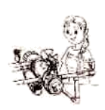

2020年北京市中考英语试题 原卷解析
2020北京中考真题
英 语
2020年北京市高级中等学校招生考试
英 语 试 卷
知识运用
一、单项填空
1.Mr. Jackson is a popular writer, and we all like reading __________ books.
A. hisB. herC. theirD. your
【答案】A
【解析】
【详解】句意：杰克逊先生是个受欢迎的作家，我们都喜欢读他的书。
考查物主代词。his他的；her她的；their他们的；your你/你们的。根据空后有名词books，可知需要填形容词性物主代词；又根据前一句Mr. Jackson is a popular writer，可知此处是指“喜欢读他的书”，故选A。
2.Usually I make breakfast for my family ___________ Saturdays.
A. AtB. inC. onD. to
【答案】C
【解析】
【详解】句意：通常我在星期六为我的家人做早餐。
本题考查介词。at+钟点，表示在几点钟；in+年/月，表示在某年或某月；on+星期/具体的日子，表示在星期几或某一天；to向。on Saturdays在星期六，故选C。
3.Wash your hands before meals, ________ you may get ill.
A. andB. butC. orD. so
【答案】C
【解析】
【详解】句意：饭前洗手，否则你可能会生病的。
本题考查连词。and而且，but但是，or否则，so所以。结合句意，“饭前不洗手”是“你可能会生病”的条件，故选C。
4.—________ you give me a hand? I can't move the box by myself.
—No problem.
A. CouldB. ShouldC. MustD. Need
【答案】A
【解析】
【详解】句意：——你能帮我一下吗？我自己搬不动这个箱子。——没问题。
本题考查情态动词。could能，should应该，must必须，need需要。根据I can't move the box by myself可知，我自己搬不动这个箱子，因此请求别人帮助，Could you do sth？你能做某事吗？表示委婉地请求。故选A。
5.—______________ do you visit your grandparents, Tom?
—Twice a month.
A. How muchB. How oftenC. How longD. How soon
【答案】B
【解析】
【详解】句意：——汤姆，你多久去看一次你的祖父母？——一个月两次。
考查疑问词辨析。How much多少（钱），提问不可数名词的量或物品的价格；How often多久一次，提问频度；How long多久，对时间段进行提问；How soon多久以后，对“in+时间段”进行提问。根据答句“Twice a month.”表示的是频率，可知要用How often提问。故选B。
6.Zhaozhou Bridge is one of ________ stone bridges in the world.
A. oldB. olderC. oldestD. the oldest
【答案】D
【解析】
【详解】句意：赵州桥是世界上最古老的石桥之一。
考查形容词最高级。old古老的。old形容词原级；older形容词比较级；oldest形容词最高级；the oldest形容词最高级前加the。根据题干中“one of ____ stone bridges in the world”可知此处是指世界上最古老的石桥之一，用“one of the +形容词最高级+名词复数”结构。故选D。
7.If you take this train, you _________ in Shanghai in five hours.
A. arriveB. will arriveC. arrivedD. have arrived
【答案】B
【解析】
【详解】句意：如果你坐这趟火车，你将在五小时内到达上海。
考查时态。arrive一般现在时；will arrive一般将来时；arrived一般过去时；have arrived现在完成时。本题是以if引导的条件状语从句，时态上要符合“主将从现”，所以空格处应用一般将来时will do，故选B。
8.I ___________ on the computer when Frank called me last night.
A. workB. will workC. was workingD. am working
【答案】C
【解析】
【详解】句意：弗兰克昨晚打电话给我时，我正在用电脑工作。
考查过去进行时。work工作,动词原形；will work一般将来时；was working过去进行时；am working现在进行时。根据题干中“when Frank called me last night”可知此处表示当某件事情发生的时候，另一件事情正在进行，when引导的从句用一般过去时，主句用过去进行时。故选C。
9.We ________ each other since I came to Beijing, but we send emails very often.
A. don't seeB. didn't seeC. won't seeD. haven't seen
【答案】D
【解析】
【详解】句意：自从我来北京，我们就没见过面，但我们经常发电子邮件。
本题考查时态。don't see是一般现在时；didn’t see是一般过去时；won’t see是一般将来时；haven’t seen是现在完成时。根据since I came to Being可知，此处用现在完成时，故选D。
10.—What’s that noise, Sam?
—My little brother _________ with his toy car now.
A. will playB. is playingC. playsD. played
【答案】B
【解析】
【详解】句意：——萨姆，那是什么声音？——我的弟弟现在正在玩他的玩具汽车。
考查现在进行时。play玩。will play一般将来时；is playing现在进行时；plays动词的第三人称单数形式；played动词的过去式。根据问句“What’s that noise, Sam?”可知提到的声响是现有的，结合答句中“now”可知是说现在正在进行的动作，用现在进行时。故选B。
11.The kite ________ in China more than 2000 years ago.
A. inventsB. inventedC. is inventedD. was invented
【答案】D
【解析】
【详解】句意：风筝是中国在2000多年前发明的。
考查一般过去时的被动语态。invent发明。invents动词的第三人称单数形式；invented动词的过去式；is invented一般现在时的被动语态；was invented一般过去时的被动语态。题中主语“The kite”与动词invent之间是动宾关系，此处用被动语态；结合题干中时间状语“2000 years ago”可知要用一般过去时的被动语态，其结构为was/were done。故选D。
12.— Do you know ____________?
—At 9:00 tomorrow morning.
A. when the video meeting began
B. when did the video meeting begin
C. when the video meeting will begin
D. when will the video meeting begin
【答案】C
【解析】
【详解】——句意：你知道视频会议什么时候开始吗?——明天上午九点。
考查宾语从句。问句是一个含宾语从句的复合句，宾语从句中从句语序应该为陈述句语序，因此排除B和D；根据答语“At 9 o'clock tomorrow morning.”可知询问的应该是将来的事，用一般将来时，选项A是一般过去时，故选C。
二、完形填空

At the end of my first year of high school, I realized I needed to find a summer job. I was tired of having to ask my parents for ____13____ . I wanted to go to the shopping center or movies with friends without having to ask for $20 from my parents. I imagined having a job at a store or at a summer camp where I could play games with children. But what actually happened was ____14____. The only job I managed to find was cleaning up tables at a local restaurant.
At first, the idea of clearing tables upset me. The thought of getting up at dawn(黎明) to go clean up after people made me ___15___ ever asking for a job. The first day was terribly busy. I was running around, racing to get a table ready for the waiting customers. I'll never forget how ___16___ I felt that day, but I'll also never forget sitting down for lunch with my co-workers for the first time. People my age or ten years older all sat together and talked about their days. All of a sudden I was a part of that, and it felt good to be so ____17____ .
I've now worked at the restaurant for almost one year. I've learned to be happy about getting up so early, because I know there're going to be a few good ____18____ every day there.
From starting there as a shy student, I've been able to grow into a person that can go up and ___19___ anyone, at work or anywhere else. I'm also not as sensitive(敏感的) as I used to be-getting an impolite customer might make me feel bad, but very soon I can laugh it off with my co-workers. The little job has given me so much, and I can't wait to go back and continue to ____20____ from my experience.
13. A. foodB. moneyC. attentionD. advice
14. A. excitingB. encouragingC. confusingD. disappointing
15. A. forgetB. enjoyC. regretD. imagine
16. A. tiredB. happyC. curiousD. relaxed
17. A. lovedB. missedC. neededD. included
18. A. dishesB. choicesC. momentsD. customers
19. A. findB. greetC. pushD. stop
20. A. growB. standC. restD. hide
【答案】13. B 14. D 15. C 16. A 17. D 18. C 19. B 20. A
【解析】
本文讲述了我在高中的第一年结束时，在一家餐馆找一份暑期工作。刚开始我感到很累，后悔找到这样一份工作。但是后来，我从一个害羞的学生开始逐渐成长为一个可以在工作中或其他任何地方与任何人打招呼的人。
【13题详解】
句意：他厌倦了向父母要钱。
A. food食物，B. money金钱，C. attention注意力，D. advice建议。根据后文的“I wanted to go to the shopping center or movies with friends without having to ask for $20 from my parents.”可知，此处表示向父母要钱，故选B。
【14题详解】
句意：但实际发生的事情却令人失望。
A. exciting令人兴奋的，B. encouraging令人鼓舞的，C. confusing令人困惑的，D. disappointing令人失望的。根据“I imagined having a job at a store or at a summer camp where I could play games with children.”和“The only job I managed to find was cleaning up tables at a local restaurant.”可知，我原来想象着找一个在商店或夏令营的工作，但是我设法找到的唯一工作就是在餐馆收拾桌子，这是令我失望的事。故选D。
【15题详解】
句意：一想到天一亮就起床去收拾别人的桌子，我就后悔自己找过工作。
A. forget忘记，B. enjoy喜欢，C. regret后悔，D. imagine想象。根据前文的“At first, the idea of clearing tables upset me.”可知，擦桌子令我感到心烦，因此我后悔找到这份工作，故选C。
【16题详解】
句意：我永远不会忘记那天有多累。
A. tired疲倦的，B. happy高兴的，C. curious好奇的，D. relaxed放松的。根据前文的“The first day was terribly busy.”可知，我很忙，因此感到非常累，故选A。
【17题详解】
句意：突然之间，我成了其中的一部分，被包括在内的感觉很好。
A. loved喜欢，B. missed错过，C. needed需要，D. included包括。根据“I was a part of that”可知，我成了其中一部分，因此感到被包括在内，故选D。
【18题详解】
句意：我学会了为早起感到高兴，因为我知道每天都会有一些美好的时刻。
A. dishes菜肴，B. choices选择，C. moments时刻，D. customers顾客。根据前文的“but I'll also never forget sitting down for lunch with my co-workers for the first time.”可知，我喜欢和同事在一起吃午饭，交谈，认为这是一些美好的时刻。故选C。
【19题详解】
句意：我从一个害羞的学生开始逐渐成长为一个可以在工作中或其他任何地方与任何人打招呼的人。
A. find找到，B. greet问候，C. push推动，D. stop停止。根据前文的“I've now worked at the restaurant for almost one year”可知，我在餐馆里工作，因此要问候顾客。故选B。
【20题详解】
句意：这份小工作给了我很多，我等不及要回去继续从我的经历中成长。
A. grow成长，B. stand站立，C. rest休息，D. hide躲藏。根据前文的“From starting there as a shy student, I've been able to grow into a person that can go up and ___7___ anyone, at work or anywhere else.”可知，此处表示我成长了。故选A。
阅读理解
三、阅读下列短文，根据短文内容，从短文后各题所给的A、B、C、D四个选项中，选择最佳选项。

|
Helping Seniors(老年人) |

Matt | Posted 5 / 15 / 20 4：53PM |
I created Teens Helping Seniors with my friends. The group has about 200 volunteers. The volunteers deliver food or other supplies for the elderly in town. I spend six to eight hours a week buying food and making deliveries. By now we have completed 350 deliveries. |

Linda | Posted 5/ 15 / 20 6：25PM |
I organized Mittler Senior Technology, a program to help the elderly learn how to use computers and smartphones. Now there are 50 local seniors in the weekly technology classes. I want to make sure that the seniors could stay connected to the world. |

Jordan | Posted 5 /16 /20 5:20PM |
I came up with a way to help lonely seniors with my friends. We call it the Joy 4 All Project. By dialing 569-4255, the elderly can hear pre-recorded jokes and poems. The hotline has received more than 1, 800 phone calls. |

Kathy | Posted 5 / 16 /20 7:46PM |
I heard that the seniors in the nursing home couldn’t see their families and friends very often, so my friends and I decided to cheer up the elderly by writing them letters. We want them to know that nobody is being forgotten. By now more than 100 students in my school have joined us. |
21. Who created Teens Helping Seniors?
A. Kathy.B. Linda.C. Jordan.D. Matt.
22. How many local seniors are there in the weekly technology classes?
A. 50.B. 100.C. 200.D. 350.
23. To help the elderly in the nursing home, Kathy and her schoolmates_________.
A. taught them how to use computers
B. recorded jokes and poem for them
C. wrote them letters to cheer them up
D. delivered food or other supplies for them
【答案】21. D 22. A 23. C
【解析】
本文介绍了网上张贴的马特，琳达，乔丹和凯西这四位年轻人帮助老年人的活动。
【21题详解】
细节理解题。根据“Matt …….I created Teens Helping Seniors with my friends.”可知，马特创建了青少年帮助老年人的组织，故选D。
【22题详解】
细节理解题。根据“Now there are 50 local seniors in the weekly technology classes.”可知，现在有50名当地的老年人参加每周的科技课程。故选A。
【23题详解】
细节理解题。根据“I heard that the seniors in the nursing home couldn’t see their families and friends very often, so my friends and I decided to cheer up the elderly by writing them letters.”可知，为了帮助疗养院里的老人，凯西和她的同学们给他们写信使他们高兴起来。故选C。
A Day at the Nature Center

Emma stared(凝视) sadly out of the window of the bus. Only 50 miles outside town was the farm. She thought about the farm all the time, especially the animals.
When her family sold the farm and moved to nearby town Emma was excited. But when she got to the new school, she felt very lonely.
Emma was excited. But when she got to the new school, she felt very lonely.
With a sigh(叹气), Emma turned her attention back to the present. The bus came to a stop. “Welcome to the Leinweber Nature Center,” her teacher said. “A guide will give us a presentation about animals, and then you’ll help to feed the baby squirrels, now, I want everyone to find a partner. ”
Emma didn’t have any friends yet—who would be her partner? Emma got close to Julia, a talkative and outgoing girl. “Could I be your partner?” Emma asked uncertainly.
“Sure,” said Julia warmly.
Together, the girls walked into the center. After the presentation, a keeper showed them how to hold the bottle of milk for baby squirrels. Then the girls started to feed their own baby squirrels.
After the babies finished eating the keeper asked, “Would you like to help feed the adult squirrels, too?”
Emma was quick to volunteer, but when the keeper opened the first cage, the squirrel inside jumped out. Emma remained calm(镇静的), held out her hand, made quiet sounds, and then quickly got it.
“Wow!” Julia said. “You’re always so quiet, I thought you were afraid of everything, but you were brave.”
“I know that when animals are frightened or excited, you have to stay calm.”
The keeper nodded in agreement and asked Emma, “Would you be interested in volunteering to help out with the animals at the center?”
“Interested? I would love to work here! What an opportunity!” Emma was excited.
That afternoon, in the bus on the way back to school, Emma sat next to Julia, her new friend. A rush of newfound happiness washed over her.
24. How did Emma feel when she got to the new school?
A. Lonely.B. Lucky.C. Surprised.D. Angry.
25. At the nature center, Emma and Julia_______.
A. took a chance to be tour guidesB. helped to feed the baby squirrels
C. asked the keeper many questionsD. made a presentation about nature
26. On the way back to school, Emma felt happy because_______.
A. the volunteers warmly welcomed her
B. the teacher praised her for her bravery
C. she found a place to care for animals and made a friend
D. she went back to the farm and learned a lot about animals
【答案】24. A 25. B 26. C
【解析】
文章大意：艾玛家卖掉了农场来到了附近 城镇上，刚开始艾玛很兴奋，但是当她到达新学校时，她感到非常孤独。这天，艾玛在跟随学校去自然中心时，坐在车上禁不住想起了自己家卖掉的那个农场。但当她到达自然中心后，和伙伴一起喂小松鼠，而且还成为了自然中心的志愿者，因此在回家的路上，艾玛感到很高兴、快乐。
城镇上，刚开始艾玛很兴奋，但是当她到达新学校时，她感到非常孤独。这天，艾玛在跟随学校去自然中心时，坐在车上禁不住想起了自己家卖掉的那个农场。但当她到达自然中心后，和伙伴一起喂小松鼠，而且还成为了自然中心的志愿者，因此在回家的路上，艾玛感到很高兴、快乐。
【24题详解】
细节理解题。根据But when she got to the new school, she felt very lonely.但是当她到达新学校时，她感到非常孤独。可知，当艾玛到达新学校时，她感觉很孤独，故答案选A。
【25题详解】
细节理解题。根据“Could I be your partner?” Emma asked uncertainly. “Sure,” said Julia warmly.以及Together, the girls walked into the center…….Then the girls started to feed their own baby squirrels. 女孩们一起走进了中心。……然后，女孩们开始喂自己的小松鼠。可知，在自然中心，艾玛和茱莉亚一起帮忙喂小松鼠，故答案选B。
【26题详解】
推理判断题。根据“Interested? I would love to work here! What an opportunity!” Emma was excited.以及That afternoon, in the bus on the way back to school, Emma sat next to Julia, her new friend. A rush of newfound happiness washed over her. 可知，在回学校的路上，艾玛感到很高兴，是因为她可以去自然中心去帮忙照顾动物，而且还结交了一个新朋友，故答案选C。
There are millions of recipes(菜谱) hidden in the boxes and hearts of grandmother and parents. These family recipes are a special part of our family history. Some of them have been passed down from generation(一代人) to generation.
“I realized I couldn't go home every weekend for my mom's delicious dishes,” says Shreya, who is about to enter university. Shreya has recently started following her mother around the kitchen, taking notes on how to make her “masala chai” and tasty kachoris.
"Those special tastes can immediately unlock a whole flood of emotions, memories and feelings of family, love, and comfort," says she.
She adds, "I am looking to the day when my kids will come to know of their grandmothers through the dishes they cooked."
But many of us find it difficult to keep the food connection with our busy life. Even if we have time, not many of us take the effort to collect and record the recipes from our grandmothers and parents. We often get a recipe on the phone and take it down quickly on a piece of paper. We just stick it onto the fridge for a week or two and forget about it as soon as the paper disappears from there.
Actually, there are simple ways to keep family recipes, Scrapbooks（剪贴薄）are easily found in the market. You can even add photos to record every detail of your memories about the recipe. With the help of some popular apps like Story Scans, recording family recipes has never been easier. What is needed is to scan（扫描） the recipes and record the story behind each of them. It can become the most meaningful work you have ever done with and for your family.
Keeping family recipes is saving and honoring our tradition so that future generations can continue to make family ties stronger. Every time you remember your loved ones, recreate one of the dishes from your collection and let the memories from the good old days comfort you. So why not gift your kids a family recipe book when they are starting a new life?
27. Why does Shreya follow her mother around the kitchen?
A. To clean up the kitchen.B. To note down recipes.
C. To prepare family dinners.D. To talk about family rules.
28. What can we learn from the passage?
A. Ways to record recipes can be easy.
B. Most people like writing recipe books.
C. Recipes have become popular with kids.
D. People often buy recipe books in the market.
29. Which of the following would be the best title for the passage?
A. Family Recipes: Secrets of Cooking
B. Family Recipes Are at a Crossroads
C. Family Recipes: Connections to Interests
D. Family Recipes Are More than Just Recipes
【答案】27. B 28. A 29. D
【解析】
本文介绍了很多家常菜被代代传承。这些家常菜是我们家族历史中很特别的一部分。我们可以用剪贴簿或者故事扫描等一些应用软件，记录下家庭菜谱。保留家庭菜谱就是保存和尊重我们的传统，这样子孙后代就可以继续加强家庭纽带。
【27题详解】
细节理解题。根据“Shreya has recently started following her mother around the kitchen, taking notes on how to make her “masala chai” and tasty kachoris.”可知，莎莉娅跟着妈妈在厨房转是为了记下菜谱，故选B。
【28题详解】
推理判断题。根据“Actually, there are simple ways to keep family recipes, Scrapbooks（剪贴薄）are easily found in the market. You can even add photos to record every detail of your memories about the recipe. With the help of some popular apps like Story Scans, recording family recipes has never been easier.”可知，记录菜谱的方法很简单。故选A。
【29题详解】
标题归纳题。根据“Keeping family recipes is saving and honoring our tradition so that future generations can continue to make family ties stronger.”可知，保留家庭菜谱就是保存和尊重我们的传统，这样子孙后代就可以继续加强家庭纽带。因此本文主要介绍了家庭菜谱不仅仅是菜谱，还有更深的意义。故选D。

Today we can do everything with apps: pay bills, order food and shop for anything. Mobile technology means we can hold the world in our hands. However, when it comes to technology and health care, opportunities and challenges come together.
Let’s start with the ways to get health care. Telemedicine can allow a patient to use technology to see the doctor online and get a diagnosis (诊断) and instructions without leaving home.
In addition, there are many patient websites. These allow for different kinds of interactions about our health needs without involving the medical team. Setting a date with doctors and reading lab results are readily achieved by technology.
A whole new age of medical care seems likely (可能的) to come in the future. But every coin has two sides. What might be on the other side of techno-health care?
Firstly, we should think about the health care experience as a whole. A usual visit to a doctor begins with a receptionist (接待员) , who can see and tell how a patient is doing, This may influence the treatment effect. It’s unlikely that a patient website will have such intuition.
Next, sharing the details of one's life requires trust, which takes time to build. This is certainly true in health care, where some of life's best and worst moments involve doctors. The human touch should not be undervalued and is unlikely to be there over the smartphone.
Lastly, test results can be difficult to understand. When someone without a medical degree sees a flagged result with no explanation on the website, there's room for all kinds of stories to form in their minds—and also great worry.
So how does medicine adapt (适应) to the new technology age? Very talented companies are working on it .There is medical equipment(设备) that can be used at home to send necessary signs and heart sounds through telemedicine . It seems likely that some companies will find a way to explain test results.
But what it will not achieve is the warmth of human interaction and touch. Patients often need someone to listen to —and care about—their journey story, which will never be realized through a human-less technology. Technology should be a tool, but depending on it totally will most certainly have unexpected effects. Let's not allow our humanity to be one of them.
30. According to the passage, how does technology help health care?
A It encourages doctors to voice their needs on the websites
It encourages doctors to voice their needs on the websites
B. It offers the patient a convenient way to get a diagnosis
C. It improves relations between doctors and patients.
D. It provides an opportunity to build a medical team
31. The word “intuition” in Paragraph 5 probably means______.
A. an ability to understandB. an interesting experience
C. a chance to winD. a fair decision
32. What do you know about techno-health care from the passage?
A. Patient websites require trust from doctors.
B. Talented companies can give medical advice.
C. Flagged results may cause worry for patients.
D. Medical equipment collects patients’ stories.
33. The writer probably agrees that_____.
A. technology can deal with unexpected effects.
B. telemedicine can take the place of usual health care.
C. it is difficult for patients to adapt to the new technology age.
D. techno-health care should take humanity into consideration.
【答案】30. B 31. A 32. C 33. D
【解析】
本文讲述了技术进步给健康医疗领域带来的机遇和挑战。
【30题详解】
细节理解题。根据第二段“Telemedicine can allow a patient to use technology to see the doctor online and get a diagnosis (诊断) and instructions without leaving home. 远程医疗可以让病人不用离开家就可以使用技术在线看医生并得到诊断和指导。”，可知它为病人提供了一种方便的诊断方法，故选B。
【31题详解】
词义猜测题。an ability to understand理解的能力；an interesting experience有趣的经历；a chance to win获胜的机会；a fair decision公平的决定。根据猜题所在句子中的such可知intuition指代的是上文中的“A usual visit to a doctor begins with a receptionist (接待员) , who can see and tell how a patient is doing, This may influence the treatment effect. 通常去看医生的时候会有一个前台接待员，他可以看到并告诉病人情况，这可能会影响治疗效果。”，可知猜题句是指“病人的网站不太可能有这样的理解能力”,所以intuition应指“理解的能力”，故选A。
【32题详解】
推理判断题。根据第六段中“Next, sharing the details of one's life requires trust, which takes time to build. ”，可知分享生活细节需要信任，所以选项A是错误；根据第八段中“Very talented companies are working on it”，可知有能力的公司正致力于解决这个问题，所以选项B是错误的；根据第七段中“When someone without a medical degree sees a flagged result with no explanation on the website, there's room for all kinds of stories to form in their minds—and also great worry. 当一个没有医学学位的人在网站上看到一个没有任何解释的标记结果时，就会有各种各样的故事在他们脑海中形成，同时也会产生巨大的担忧。”，可知标记的结果可能会引起患者的担忧，所以选项C是正确的；根据第八段中“There is medical equipment(设备) that can be used at home to send necessary signs and heart sounds through telemedicine .”，可知有医疗设备可以在家里通过远程医疗发送必要的信号和心脏声音，所以选项D是错的。故选C。
【33题详解】
推理判断题。根据最后一段“Technology should be a tool, but depending on it totally will most certainly have unexpected effects.”，可知技术应该是一种工具，但完全依赖它肯定会产生意想不到的效果，所以选项A是错误的；选项B意为“远程医疗可以取代通常的医疗保健。”，文章中没有提及，所以排除；根据第八段中“So how does medicine adapt (适应) to the new technology age? Very talented companies are working on it那么医学如何适应新技术时代呢? 有能力的公司正致力于解决这个问题。”，可知选项C是错误的；根据最后一段“Technology should be a tool, but depending on it totally will most certainly have unexpected effects. Let's not allow our humanity to be one of them. 技术应该是一种工具，但完全依赖它肯定会产生意想不到的效果。让我们的人性不用成为其中一个。”，可知选项D符合原文。故选D。
四、阅读短文，根据短文内容回答问题。
This 12-year-old Girl Built a Robot to Find Plastics in the Ocean

Anna Du was walking along the beach when she noticed plastics there. She reached down to pick them up, and quickly realized there were many more tiny pieces than she could deal with. It seemed impossible to clean them all up.
Du, 12 years old at the time, tried to solve the problem like any good scientist—first, by doing a little research. That’s how she learned that 8 million tons of plastics end up in the oceans every year.
Then she got to work building something that could help solve the problem; a remote-operated vehicle(遥控潜水器), or ROV. Her ROV can move through water and find plastics on the ocean floor.
The actually cool part of Du’s ROV is the detection(探测) system. She uses a camera along with three different kinds of light to find the plastics. She also uses visible(可见的) light to find unnatural colors that might make the plastics stand out.
“She has a very good engineering sense to break down a problem like this and then go after it,” says engineer Casey Machado. “It sounds simple, but it’s a level of thinking that’s really amazing. ”
Du started attending public events and workshops at a university when she was five years old, and so she picked up the engineering skills necessary to build her ROV. She says actually getting her ROV to move through water well was not easy. She failed many times, but she never gave up trying and testing.
When asked about future plans, she mentions wanting to address the effects of climate(气候) change. “I think there are a lot of problems that could be solved with new inventions,” says Du.
Du thanks her parents, who for years have taken her to student outreach activities, for supporting her interest in science, technology, engineering and math (STEM). She says she has been able to meet students and scientists there.
“I know I want to be an engineer because I like building things to help solve world problems,” says Du. “But I’m not sure what kind of engineer I want to be yet.”
34. What did Anna Du notice while walking along the beach?
35. How old was Du when she did a little research to solve the problem?
36. What can Du’s ROV do?
37. Why does Du want to be an engineer in the future?
38. What made Du succeed in building her ROV?
【答案】34. She noticed plastics.
35. At the age of 12. / When she was 12 years old.
36. It can move through water and find plastics on the ocean floor.
37. Because she likes building things to help solve world problems.
38. Her good engineering sense to break down a problem, the engineering skills necessary to build it, her persistence(not giving up) and her parents' support.（另外答出the careful observation, the awareness of protecting the oceans也可酌情给分）
【解析】
文章大意：本文主要讲Anna Du十二岁时就制作了自己的遥控潜水器，她从小就对STEM感兴趣，长大后想成为一名工程师，帮助解决世界问题。
【34题详解】
根据第1段中“Anna Du was walking along the beach when she noticed plastics there.”可知Anna Du在海滩散步的时候注意到了塑料。故答案为：She noticed plastics.
【35题详解】
根据第2段中“Du, 12 years old at the time, tried to solve the problem like any good scientist—first, by doing a little research.”可知Du做了一点调查来解决这个问题的时候，她12岁了。故答案为：At the age of 12. / When she was 12 years old.
【36题详解】
根据第3段中“Her ROV can move through water and find plastics on the ocean floor.”可知Du的ROV能够在水中移动，找到海底的塑料。故答案为：It can move through water and find plastics on the ocean floor.
【37题详解】
根据最后一段中Du的话“I know I want to be an engineer because I like building things to help solve world problems”可知她想要成为一名工程师是因为她喜欢制造东西来帮助解决世界问题。故答案为：Because she likes building things to help solve world problems.
【38题详解】
根据第5段中“She has a very good engineering sense to break down a problem like this and then go after it”可知她在解决问题方面有良好工程悟性；根据第6段中“and so she picked up the engineering skills necessary to build her ROV”可知她学会了建造ROV所需的工程技术；根据第6段中“She failed many times, but she never gave up trying and testing.”可知她不轻言放弃；根据倒数第2段中“Du thanks her parents, who for years have taken her to student outreach activities, for supporting her interest in science, technology, engineering and math (STEM).”可知Du的父母很支持她。这几点都是她成功制作ROV的重要因素。故答案为：Her good engineering sense to break down a problem, the engineering skills necessary to build it, her persistence(not giving up) and her parents' support.（另外答出the careful observation, the awareness of protecting the oceans也可酌情给分）
五、文段表达
39.从下面两个题目中任选一题，根据中文和英文提示，完成一篇不少于50词的文段写作。文中已给出内容不计入总词数。所给提示词语仅供选用。请不要写出你的校名和姓名。
假如你是李华，你不小心把Peter借给你的书弄丢了。为表达歉意，请用英语给他写一封邮件，告知此事，并提出弥补的办法。
提示词语：lose, make up（弥补）, buy, send
提示问题：
What happened to the book?
What will you do to make up for it?
Dear Peter, How are you getting on? I’m writing this email to say sorry________________________________________________________________________________________________________________________________________________________________ Yours, Li Hua |
【答案】例文：
Dear Peter,
How are you getting on? I’m writing this email to say sorry, because I lost the book which I borrowed from you a week ago. I want to make up for my error. I will buy the same one from the bookstore and send it to you. What do you think of my method? I hope that you can forgive me. I am looking forward to your early reply.
Yours,
Li Hua
【解析】
【详解】1.题干解读：该题目属于记叙文写作，写作时要按邮件格式写。开头介绍我写信的目的；接下来介绍我打算如何弥补我的过失；最后希望你能原谅我。
2.例文点评：例文采用一段式；用第一人称来叙述内容；时态采用一般现在时和一般过去时，用一般将来时介绍我提出的弥补办法，介绍全面，条理清晰，用连词连接并列成分，文章前后连贯。
3.高分亮点：
短语：borrow from；want to do sth；send…to…；look forward to。
句型：定语从句which I borrowed from you a week ago；宾语从句that you can forgive me。
40.“不积跬步，无以至千里。”积累，有助于我们达成目标，实现梦想。
某英文网站正在开展以“积累”为主题的征文活动。假如你是李华，请用英语写一篇短文投稿，谈谈你在积累知识方面做过什么，有什么收获。
提示词语：accumulate（积累）, read, keep, make progress
提示问题：●What did you do to accumulate knowledge?
●What have you learned from doing so?
Without accumulating, we can hardly achieve anything. ____________________________________________________________________________________________________________________________________________________________________________________________________________________________________________________________ |
【答案】例文：
Without accumulating, we can hardly achieve anything. As for me, I have taken lots of measures to accumulate knowledge. First of all, I attentively listened to the teachers, parents, and the others who could provide me with much knowledge, considering that it was one of the most effective ways to enrich myself. In the second place, I used to observe something carefully and took note at the same time so that I would not miss anything important. Last but not least, when having spare time, I chose to read various books and reviewed what I had gained regularly.
In a word, I have learned a lot during the process of accumulating knowledge. Just as an old saying goes, Rome was not built in one day. That is to say, one cannot succeed without persistent accumulation. So I have learned that only by gaining knowledge step by step can we achieve our goal and realize our dream. In the future, I will continue to keep accumulating knowledge and make greater progress.
【解析】
【详解】1. 题干解读：本题属于材料作文，题目的开头已给出。要求根据提示词语和提示问题来写一篇短文，谈谈你在积累知识方面做过什么，有什么收获。写作时要紧扣材料内容并进行适当发挥。适当使用副词和连词等增加亮点。写好时，再阅读一遍，减少语法错误，不要犯单词拼写上的错误。
2. 例文点评：这是一篇比较优秀的例文。例文紧扣题目要求，用上了所给提示词并回答了“你是如何积累知识的？”和“你从中学到了什么？”这两个问题。例文简明扼要，结构清晰，语言表达到位。
3. 高分亮点：
单词和短语：as for；take lots of measures to do sth.；first of all；provide sb. with sth.；used to do sth.；at the same time；last but not least；in a word；step by step；make progress。
句型：who引导的限制性定语从句；that引导的宾语从句；so that引导的目的状语从句；when引导的时间状语从句；what引导的宾语从句；以only开头的倒装句。